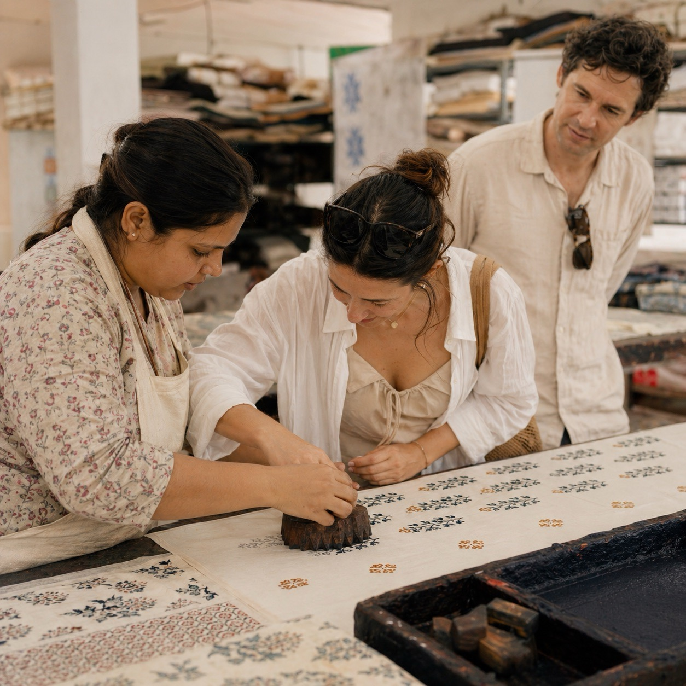

Hand block printing is often described as slow, but that word only tells part of the story. What matters more is the rhythm: carved wood meeting colour, colour meeting cloth, and the printer returning again and again to a measured repeat until the surface begins to hold pattern with remarkable calm.
At PEXX, the process begins long before ink reaches fabric. Motifs are refined for repetition, balance, and clarity. Each design must respect the physicality of the block itself, because this is not a digital print laid over cloth. Every impression has pressure, alignment, and a living texture shaped by the hand.

Where the process starts
Designs are translated into carved wooden blocks, each one carrying a section of the final motif. Depending on the complexity of the pattern, a textile may require multiple blocks for outlines, fillers, and accent colours. Registration matters enormously. Even the most poetic pattern needs discipline underneath it.
Fabric preparation matters just as much. The cloth is washed, stretched, and readied so that the print lands evenly. Natural cotton responds beautifully because it holds colour with softness while still revealing the human touch behind each layer.
Luxury in block printing is not about perfection without evidence of the hand. It is about precision that still feels alive.
The value of repetition
Printing itself is a conversation between memory and concentration. The artisan learns spacing through movement, often aligning each block by eye with an accuracy built from years of repetition. That is why handmade surfaces feel different from machine-made ones. They carry consistency, but never sterility.
When multiple colours are involved, the fabric returns for additional passes. Drying time, pigment behaviour, and weather all influence the result. Small adjustments are constant, which is precisely what keeps the work sensitive rather than mechanical.
Why it still matters
In a market full of speed, hand block printing offers something rarer: material presence. You can sense the block edge, the pressure of the print, and the slight depth of layered colour. Those qualities make the finished textile feel intimate and enduring, whether it becomes bed linen, apparel, or a table setting.
That is the enduring appeal of the craft. It asks for patience, but it rewards the eye with warmth, irregular beauty, and a kind of quiet confidence that industrial surfaces often miss.